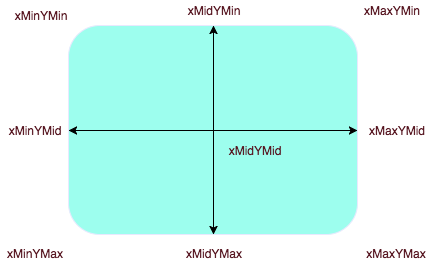

<!DOCTYPE html>
<html>
	<head>
		<meta charset="UTF-8">
		<title></title>
	</head>
	<body>
		<!--一、
			SVG 全称是 Scalable Vector Graphics，即，矢量图。******
			在 Web 中使用 SVG 可以解决位图放大失真的问题。
			首先，不要把 SVG 和 CSS，Canvas，HTML 搞混。
			他们之间并没有你中有我，我中有你的关系。
			SVG 是通过 XML 的形式写在 HTML 文档中的。*************
		-->
		<!--
			二、
			简单来说有 3 个基本概念：

			viewport: 物理窗口
			viewbox: 实物窗口（算了，下面解释）
			preserveAspectRatio: 保留横纵比
		-->
		<!--
			三、
			viewport
			
			这实际上就是你用 x,y,width,height。
			这 4 个属性，在页面上固定的矩形区域。
		-->
		<!--
			四、
			viewbox
			
			定义 SVG 元素在 viewport 中的具体尺寸比例。
			默认情况下 SVG 是自动填充满 viewport 的。
			注意:在 SVG 中，子标签的所有尺寸都是不能带单位的，因为初始单位就是根据上面两个概念确定。
		-->
		<!--<svg width="500" height="200" viewBox="0 0 100 40" >
		 	<rect x="10" y="0" width="10" height="5"
		          style="stroke: #000000; fill:none;"/>
		</svg>-->
		<!--
			五、
			preserveAspectRatio
			
			该属性就是用来定义上面 viewport 和 viewbox 相互对齐的方式。
			换句话就是说，它的属性可以改变 viewbox 的具体位置。
			
			align: 定义 viewport 和 viewbox 的对齐方式，分为 x,y 轴两个方向。
			X 轴方向有三种方式：左边重合（xMin），x 轴中点重合（xMid），右边重合（xMax）。
			同理，Y 轴也有 顶边重合（YMin），y 轴中点重合（YMid），底边边重合（YMax）
			
			
			meetOrSlice: 主要就是定义该 SVG 是内嵌，还是裁剪或是 none（听天有命）。
			meet || slice || none 这三个属性具体干的事情。
		-->	
			<!--<svg width="400" height="200" viewBox="0 0 200 200" preserveAspectRatio="xMinYMin meet" style="border:1px solid #cd0000;">
			    <rect x="10" y="10" width="150" height="150" fill="#cd0000"/>
			</svg>-->
		<!--可以从图中看出，viewbox 是通过中心进行延展的。注意，它的原点坐标还是在 viewbox 的左上角。
			如果你是动态增加尺寸的话，此时并不是从左到右增加，而是从中心向两端扩张。同理，
			如果你使用的是 xMinYMin 的话，那么如果存在尺寸变化，那么相对点则是从左上角开始的。
			简单来说，align 相对点其实一共有 9 个-->
			<!---->
			
			
			<!--
				六、path
				Path 在 SVG 中的地位应该是比较高的，实际上，利用 Path 这个一个标签可以画出任意的图形。
				path 中 d(data) 属性是用来定义相关线条数据，通常是以 M/m 为起始，
				代表的就是 move to 的意思。在 path 中，一共可以定义 10 种不同的图形。
				例如 M/m，L/l。 大家可以注意，每种标识符有两种书写方式，即，大小写。

				大写: 参照的是绝对坐标，即，SVG 的右上角
				小写: 参照的相对坐标，即，前一个点的坐标。
			-->
			<!--<svg>
				<g fill="none" stroke="#000">
				    <path d="M7.3 75L25.9 6.8s58.4-6.4 33.5 13-41.1 32.8-11.2 30.8h15.9v5.5s42.6
				      18.8 0 20.6" />
				    <path d="M133.1 58.2s12.7-69.2 24.4-47.5c0 0 4.1 8.6 9.5.9 0 0 5-10 10.4.9 0
				      0 12.2 32.6 13.6 43 0 0 39.8 5.4 15.8 15.4-13.2 5.5-53.8
				      13.1-77.4 5.9.1 0-51.9-15.4 3.7-18.6z" />
				</g> 
			</svg>-->
			<!--
				七、线性
				
				M/m
				该使用定义起始点的，没啥特殊的作用。
				
				L/l
				原意是 Line to，用来画线段的。格式和 M/m 差不多：
				
				
				H/h
				用来画水平线，即，Horizontal。
				
				
				V/v
				用来画竖直线，即，vertical。
				
				C/c
				这是正统的贝塞尔曲线，需要 4 个参考点，
				下图应该说比较确切表示了二次贝塞尔所需要的点。
				所以，C/c 需要定义三个点
				
				S/s
				该标识符实际上使用来表示一个反射贝塞尔，
				即，在原有贝塞尔上再加一段贝塞尔曲线，
				所以，S/s 一般和 C/c 一起使用。
				
				Q/q
				
				该标识符是用来定义二次(quadratic)贝塞尔曲线，
				该曲线相当于上面传统的贝塞尔来说，
				更加简单，它只需要定义三个点，
			-->
			<!--八、分组
				SVG 中的分组你可以理解为 PS 中的图层，
				一块图层里面通常只会放一下高内聚的图形，这样既方便移动又方便做动画。
				SVG 中的分组标签就是 g，使用 g 标签包裹的所有子元素都认同为一组。
			-->
		
			<!--<svg>
				<g fill="none" stroke="#000">
				    <path d="M7.3 75L25.9 6.8" />
				</g> 
			</svg>-->
			<!--<svg>
				<g fill="none" stroke="#000">
				    <path d="M 7.3 75 l 25.9 6.8 h 23 v 18" />
				</g> 
			</svg>-->
			<!--<svg>
				<g fill="none" stroke="#000">
				    <path d="M10 10 H 90 V 90 H 10 L 10 10"/>
				</g> 
			</svg>-->
		
		
			<!--<svg>
				<g fill="none" stroke="#000">
				    <path d="M10 10 H 90 V 90 H 10 Z"/>
				</g> 
			</svg>-->
			
			<!--<svg>
				<g fill="none" stroke="#000">
				    <path d="M10 10 C 20 20, 40 20, 50 10" />
				</g> 
			</svg>
			-->
			
			<!--<svg>
				<g fill="none" stroke="#000">
				    <path d="M10 80 C 40 10, 65 10, 95 80 S 150 150, 180 80" />
				</g> 
			</svg>
			-->
		
		
			<!--<svg>
				<g fill="none" stroke="#000">
				   <path d="M10 80 Q 95 10 180 80" stroke="black" fill="transparent"/>
				</g> 
			</svg>-->
			<!--<svg>
				<g fill="none" stroke="#000">
				   <path d="M10 80 Q 95 10 180 80 T 260 10 " stroke="black" fill="transparent"/>
				</g> 
			</svg>-->

		
		
		
		
		
		<!--X 轴方向有三种方式：左边重合（xMin），x 轴中点重合（xMid），右边重合（xMax）。
			同理，Y 轴也有 顶边重合（YMin），y 轴中点重合（YMid），底边边重合（YMax）
			meetOrSlice: 主要就是定义该 SVG 是内嵌，还是裁剪或是 none（听天有命）。-->
		<!--<svg width="400" height="200" 
			viewBox="0 0 200 200" preserveAspectRatio="xMinYMin slice" 
			style="border:1px solid #cd0000;">
		    <rect x="10" y="10" width="150" height="150" fill="#cd0000"/>
		</svg>-->
		<!--可以从图中看出，viewbox 是通过中心进行延展的。注意，它的原点坐标还是在 viewbox 的左上角。
			如果你是动态增加尺寸的话，此时并不是从左到右增加，而是从中心向两端扩张。同理，
			如果你使用的是 xMinYMin 的话，那么如果存在尺寸变化，那么相对点则是从左上角开始的。
			简单来说，align 相对点其实一共有 9 个-->
	</body>
</html>
